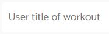
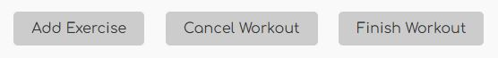
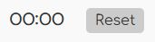
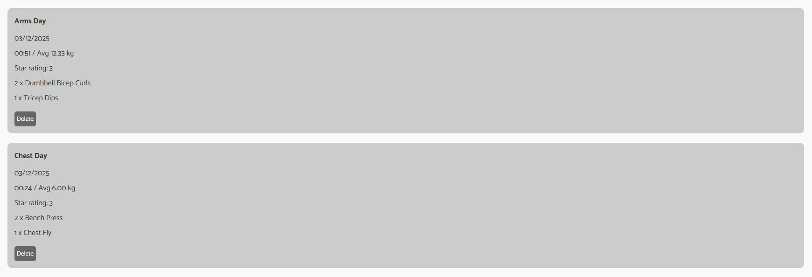
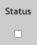
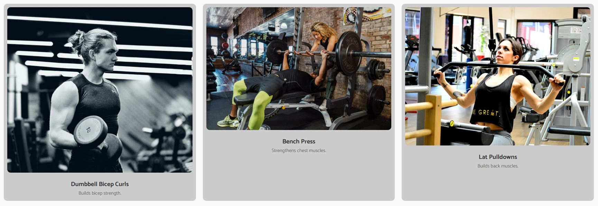
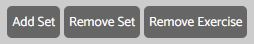

Muscle Mission
A single-page fitness tracking app built with JavaScript and Node.js

A single-page fitness tracking app built with JavaScript and Node.js
Many gym-goers struggle to track their workouts consistently, often relying on scattered notes, memory, or multiple apps that are overly complex and require logins or subscriptions.
Without a simple way to record exercise selections, weights, reps, and workout duration, users find it difficult to monitor progress over time. This leads to plateaus, ineffective training routines, and a lack of motivation.
Existing fitness apps also lack real-time responsiveness, and many do not allow users to quickly adjust or customise their routines during a session, creating unnecessary friction in the gym environment.
There is a need for a lightweight, fast, and user-friendly solution that enables fitness enthusiasts to track their workouts with zero setup, real-time interaction, and offline-friendly data persistence.
A comprehensive workout tracking application with real-time features and persistent storage

Users can personalize their workout sessions by naming each workout, creating a more organized and meaningful training experience.

Full control over workout sessions including adding exercises, canceling workouts, and finishing sessions with comprehensive tracking.

Integrated stopwatch functionality allows users to track the exact duration of their workouts, helping with pace and time management.

All workout sessions are stored locally and remain accessible even after page refresh, providing a reliable training history log.
Users can rate their workout sessions on a 4-star scale, allowing for quick assessment and tracking of workout quality over time.

Checkbox system for marking individual sets as completed, providing granular control over exercise progress tracking.

Clean popup interface for selecting exercises to add to workouts, with intuitive navigation and visual feedback.

Comprehensive exercise management including adding/removing sets and deleting exercises, giving users full flexibility in workout customization.